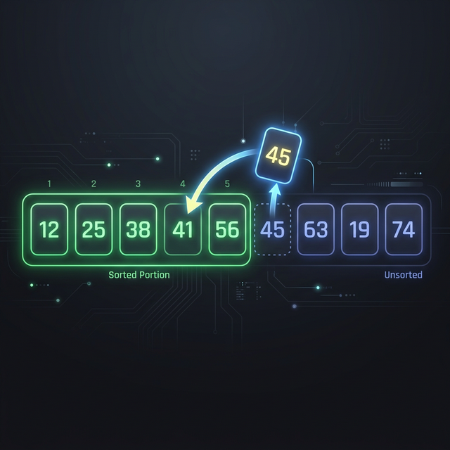

Insertion Sort
Insertion Sort is a simple sorting algorithm that builds the final sorted array one item at a time. It is much less efficient on large lists than more advanced algorithms such as quicksort, heapsort, or merge sort.
However, it performs very well for small datasets or on datasets that are already substantially sorted. It conceptually works the way you might sort a hand of playing cards: taking one card at a time and inserting it into its correct position relative to the cards already processed.

Complexity
| Best Time | Average Time | Worst Time | Space |
|---|---|---|---|
| O(N) | O(N²) | O(N²) | O(1) |
How It Works (Step-by-Step)
- Assume the first element is already sorted.
- Pick the next element (the "key").
- Compare the key with elements in the sorted sublist (moving from right to left).
- Shift all elements that are greater than the key one position to the right to make space.
- Insert the key into the correct position.
- Repeat steps 2-5 for all remaining elements in the array.